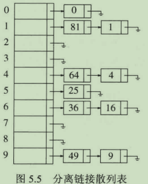
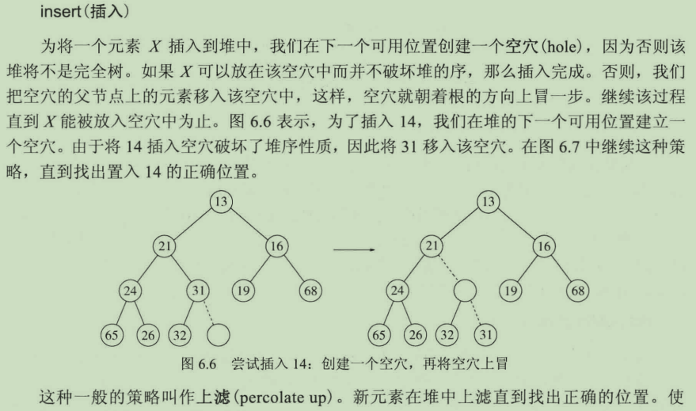
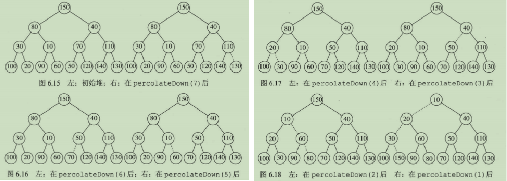
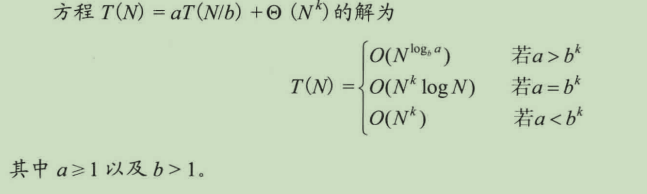
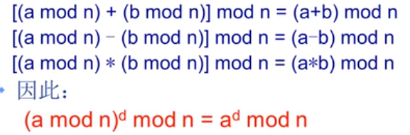

其他数据结构以及补充
散列
是根据键（Key）而直接访问在内存存储位置的数据结构。它通过计算一个关于键值的函数(散列函数)，将所需查询的数据映射到表中一个位置来访问记录；散列(hashing)是一种以常数平均时间执行插入、删除和查找的技术。
如果一个元素插入时与一个已经存在的元素散列到相同的值时，则产生了一个冲突，有两种简单的解决方法: 分离链接法和开放定址法。
-
分离链接法: 将散列到同一个值得所有元素保留到一个链表中，新元素一般被插入到链表的前端，因为新近插入的元素最有可能不久被访问。

装填因子: 散列表的元素个数对散列表大小的比值λ。 执行一次查找的评价代价为1+λ/2；分离链接散列法的一般法则是让表的大小与预料的元素个数一致，即λ≈1，当λ超过1时，就扩大散列表的大小。 -
开放定址法：采用探测散列表，一种不采用链表的散列表，对于冲突的元素尝试另外的单元(hi(x)=(hash(x)+f(i))mod TableSize, f是冲突解决方案)，这种形式的表要比分离链接法需要的表更大，要求λ小于0.5。
常见冲突解决包括线性探测法(f是i的线性函数, eg.f(i)=i)、平方探测法和双散列。
对于f(i)=i的线性探测，相当于相继探测逐个单元(可以循环)以找到第一个空单元；由于实现简单，具有良好的局部性，在硬件上的标准实现中十分流行; 但某种情况下，冲突造成元素占据的位置形成区块，即一次聚集，导致散列到区块中的任何关键字都需要多次探测单元才能解决冲突。
平方探测，f(i)=i^2, 会引起二次聚集(散列到同一位置上的元素将探测相同的备选位置)，装填因子不能大于0.5，即至少有一半为空且表大小为素数才能保证插入元素总能成功。
双散列，f(i)=i*hash2(i)。
再散列(rehash)，即扩大散列表的大小，将旧表中的元素插入到新表中。一般有三种策略：表满一半就rehash；插入失败再rehash；装填因子λ达到特定值就rehash。
完美散列
使用二级散列表代替链表，而二级散列表的大小与散列到其对应的hash值得元素个数N有关，SecondTableSize=Ω(N^2)，二级散列表的元素个数将较主散列表少很多，大部分情况下可以保证至少有1/2概率不存在冲突(即二级表的λ<=0.5)，如果仍然冲突，则直接换用新的散列函数对该二级表中元素重新插入，尝试的期望次数为2。如果所产生的冲突次数大于要求，则主散列表还可以构造多次。
杜鹃散列
以两个hash table为例： 假设有N个项，我们维护两个分别超过半空的表，且有独立的散列函数，可以把每个项分配到每个表中的一个位置， 杜鹃散列保持不变的是一个项总是会被存储在这两个位置之一。 1、两个位置均为空，则任选一个插入； 2、两个位置中一个为空，则插入到空的那个位置 3、两个位置均不为空，则踢出一个位置后插入，被踢出的对调用该算法， 再执行该算法找其另一个位置，循环直到插入成功。 4、如果被踢出的次数达到一定的阈值，则认为hash表已满，并进行重新哈希rehash。 优点： 最坏情况下常数级的查找和删除时间。 避免了懒惰删除和额外的数据以及并行化的可能性。 缺点： 如果散列值不好，则很容易发生循环，即插入导致永远的在挤走冲突元素，永远都在冲突状态。 不过可以证明，如果λ<0.5，循环的概率是比较小的。
跳房子散列
用事先确定的，对计算机底层体系结构而言最优的一个常数， 给探测序列的最大长度加个上界(依旧是线性探测)。这样做可以给出常数级的最坏查询时间， 并且与杜鹃散列一样，查询可以并行化，以同时检查可用位置的有限集。 跳房子散列规则： a）以最大探测上界MAX_DIST = 4为例 b）散列位置hash(x)，则探测位置为 hash(x)+0、hash(x)+1、hash(x)+2、hash(x)+3。 hash(A)=7, hop(7)=1000; //表明当前位置被占； hash(B)=9, hop(9)=1000; hash(C)=6, hop(6)=1000; //发生冲突，D存放到位置8，hop(7)=1100表示7、8被占，hop(8)=0000表示尚未有元素散列值为8 hash(D)=7, hop(7)=1100, hop(8)=0000; //发生冲突，且8、9已经被占，E存放到10，hop(8)=0010，表示散列值为8的元素占据10号位置 hash(E)=8, hop(8)=0010, hop(10)=0000; //继续向下一个位置探测，hop(8)=0011, 散列值为8的元素占据10、11号位置 hash(F)=8, hop(8)=0011, hop(11)=0000;
散列用途
符号表：跟踪源代码中的变量 适用于图论问题 置换表 在线拼写检验程序 实现高速缓冲存储区
堆
这里特指二叉堆，其是一棵完全二叉树，如果将树中全部节点存按层序遍历存放在数组下标1开始的位置，则位置i上的节点，其左孩子位于数组2i位置上，右孩子则位于2i+1位置上，因此实际中堆都采用数组来实现。
用二叉堆来实现优先队列，在查找一组数中第k个最大/小数时，通过优先队列，进行k次删除返回结果，时间复杂度为O(N+klog N)。
- 堆序性质：在一个堆中，对于每一个节点X(根节点除外，它没有父亲)，X的父亲的key要小于等于X中的key，因此最小元永远在根节点处。
插入和删除的最坏时间复杂度都为O(log N)
 对一组数进行构堆操作(从第h-1层的最右侧节点(i=N/2)开始，依此向右向上遍历节点，执行下滤操作, 整个过程的上界是每个节点到其最长叶节点的路径和，也即全部结点的高度和)，时间复杂度是O(N).

并查集(union/find sets)
要用于解决一些元素分组的问题。它管理一系列不相交的集合，并支持两种操作：
合并（Union）：把两个不相交的集合合并为一个集合;
查询（Find）：查询两个元素是否在同一个集合中.
初始化:把每个点所在集合初始化为其自身。通常来说，这个步骤在每次使用该数据结构时只需要执行一次，无论何种实现方式，时间复杂度均为O(N)。
class DisjSets{
private:
std::vector<int> father; //存储每个节点的父节点，初始设为其自身
std::vector<int> rank; //存储每个节点的估计高度，因为随着路径压缩，树的结构发生改变，高度会发生变化，初始值设为1
public:
explicit DisjSets(int numElements): father(numElements), rank(numElements, 1){
for(int i=0;i<numElements;i++)father[i]=i;
}
int find(int x);
void unionSets(int , int );
};
int DisjSets::find(int x){ //在查询时执行路径压缩，即让沿途的每个节点的父节点都为根节点
return find(x)==x?x:(father[x]=find(father[x]));
}
void DisjSets::unionSets(int elem1, int elem2){
int root1=find(elem1), root2=find(elem2);
if(root1==root2)return;
if(rank[root1] <= rank[root2])
father[root1] = root2; //让较深的树的根节点成为浅树的根的父节点，这样不会增加整棵树的高度
else
father[root2] = root1;
//只有rank[root1]与rank[root2]相等时，合并才会增加根节点的高度，且此时是root1被合并到root2
//因此只有rank[root2]++
if(rank[root1]==rank[root2] && root1!=root2)
rank[root2]++;
}
补充
C++11中的容器
- map\set: 通过红黑树实现
- unordered_map\unordered_set通过散列表实现
- 根据递归方程估计时间复杂度
 - 位运算:
把一个整数减去1之后再和原来的整数做按位与，得到的结果相当于把整数的二进制表示中最右边的1变成0，而其余位不变。例如: 1100b & 1011b = 1000b
n>0, n&=~(n-1); //得到的n除了右侧第一个1之外，都变为0， n=23 = 00..10111b, ~(n-1)=11..01001b, 则n&=~(n-1) = 00..00001b
取余运算对于加减乘除均满足分配律
 - 判断两个浮点数是否相等: 由于存在精度误差，不能使用"=="来判断两个浮点数是否相等；可以判断两个数之间的差值是否小于一个比较小的数，如1e-6或1e-7。
Linux内核中的数据结构
- 链表: linux内核中的标准链表采用环形双向链表，具体实现为:
struct list_head{
struct list_head* prev;
struct list_head* next;
};
对于其他自定义的结构体，通过添加struct list_head类型的成员，从而获得指向前后元素的指针。并且为了通过链表指针找到父结构中包含的任何变量，linux定义了container_of宏，其可以从结构体成员获取结构体的地址，因为在C语言中，一个给定结构中的变量偏移在编译时地址就被ABI固定下来，这个偏移可以通过offsetof获得。
#define offsetof(TYPE, MEMBER) ((size_t) &((TYPE *)0)->MEMBER)
#define container_of(ptr, type, member) ({ \
const typeof( ( (type*)0)->member )* __mptr=(ptr); \
(type*) ( (char*)_mptr - offsetof(type, member) );}) \
#define list_entry(ptr, type, member)\
container_of(ptr, type, member)
ptr（type的成员的地址），type（结构体类型），member（成员的名称)；
offsetof把0地址强制转化成了TYPE*类型，然后将它的MEMBER成员的地址转化为size_t类型。也就是说如果一个类型为TYPE的结 构体地址从0开始，那么它的MEMBER成员的地址就是MEMBER成员与TYPE类型地址之间的相对偏移量（以char计数的）；
container_of定义中第一行通过typeof取得member的类型，然后__mptr是member类型的指向ptr地址的常量指针，这里的主要目的是为了对ptr与member做类型检查,如果用typeof求出来的类型和ptr不一致，那么在赋值操作时，编译器会报错；
第二行，在取得了member的地址之后，只要把它减去member相对于结构体的偏移量，就可以得到结构体的地址了。最后，再把这个地址转化成type*，就完成了整个逻辑。
依靠list_entry方法，内核提供了创建、操作等管理链表的各种方法，而这些方法并不需知道list_head所嵌入对象的数据结构。